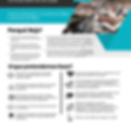

Revitalização e Plantação
Trabalharemos na revitalização de igrejas existentes e na plantação de novas comunidades de fé em Beja e região, fortalecendo o corpo de Cristo no sul de Portugal.
Revitalizando igrejas, apoiando imigrantes e alcançando estudantes no sul de Portugal. Junte-se a esta jornada missionária.
Habitantes
25mil
pessoas em Beja e região
Universitários
3mil+
estudantes na universidade local
Campo Missionário
●
poucas igrejas evangélicas ativas na região
Beja é uma cidade no sul de Portugal com aproximadamente 25.000 habitantes e uma crescente população de imigrantes e refugiados. Com mais de 3.000 estudantes universitários e poucas igrejas evangélicas ativas, a região representa um campo missionário fértil e urgente.
O Alentejo (e em especial Beja) é o distrito com maior índice de suicídios e depressão de Portugal. Uma cidade marcada por solidão, desemprego e falta de perspectiva — uma terra que precisa urgentemente da esperança do Evangelho.
Nenhuma organização evangélica trabalha entre os 4.500 alunos universitários que estudam em Beja. Uma geração inteira — jovens, abertos, em formação — sem nunca ter ouvido o Evangelho de forma intencional.
As igrejas existentes na região são geralmente muito pequenas — 50% têm menos de 25 membros. Lutam para sobreviver e registam poucas conversões e batismos. O corpo de Cristo em Beja precisa de reforço e colaboração.
Residem em Beja indianos, nepaleses, tailandeses, paquistaneses, bengaleses e africanos de vários países — muitos vindos de nações com acesso muito restrito ao Evangelho. Beja tornou-se uma porta de entrada missional única.

O panorama social em Beja é descrito como "grave, caótico e descontrolado". São cada vez mais os cidadãos africanos e asiáticos a deambular pelas ruas sem destino, sem trabalho e pedindo algo para comer. Uma necessidade real que abre portas para o serviço cristão.
Trabalharemos na revitalização de igrejas existentes e na plantação de novas comunidades de fé em Beja e região, fortalecendo o corpo de Cristo no sul de Portugal.
Cuidaremos de imigrantes e refugiados em Beja, oferecendo suporte espiritual, emocional e prático para sua integração e acolhida na nova terra.
Alcançaremos os mais de 3.000 estudantes da universidade local através de projetos evangelísticos, grupos de discipulado e relacionamentos de proximidade.
Conheça um pouco da nossa história e chamado para servir como missionários entre o Brasil e Portugal.

Somos membros da Igreja Batista do Povo — Sede Vila Mariana, em São Paulo. Ao longo dos anos, servimos em diversas áreas ministeriais, incluindo discipulado, aconselhamento bíblico e liderança de pequenos grupos.
Nossa formação inclui a Escola Bíblica Ministerial (EBM) — três anos —, além de capacitação para o ministério Lares de Paz e aconselhamento bíblico. Neno atua como professor de Maturidade Cristã na EBM. Liz possui formação em ministério feminino pelo Seminário Teológico Evangélico Betel Brasileiro.
Já servimos como missionários em Sesimbra, Portugal, onde ajudamos na revitalização de uma igreja local. Fomos também presidentes do capítulo da Adhonep em Vila Mariana — SP.
 Beja · Portugal
Beja · Portugal


 SEPAL
SEPAL
 MEVIC
MEVIC
Para realizar este trabalho missionário em Portugal, precisamos de parceiros que nos apoiem financeiramente e em oração.
Sua contribuição financeira é fundamental para viabilizar nossa missão em Portugal. Torne-se um mantenedor mensal ou faça uma oferta pontual.
A oração é fundamental para o sucesso desta missão. Comprometa-se a orar regularmente pelo nosso trabalho em Beja e pelo campo missionário em Portugal.
Compartilhe nossa missão com sua igreja, amigos e familiares. Quanto mais pessoas conhecerem o projeto, maiores as chances de alcançarmos nosso objetivo.
Ofertas via
Neno e Liz Bianchi — SEPAL / MEVIC
Projeto: Beja — Portugal 2025 · Missionários Neno e Liz
Em parceria com
Esta doação é processada em parceria com a SEPAL — Serviço de Envio e Apoio a Líderes e Agências, organização responsável pelo envio e suporte missionário de Neno e Liz Bianchi.
Ao clicar no botão abaixo, você será direcionado à plataforma segura da SEPAL para concluir sua contribuição.